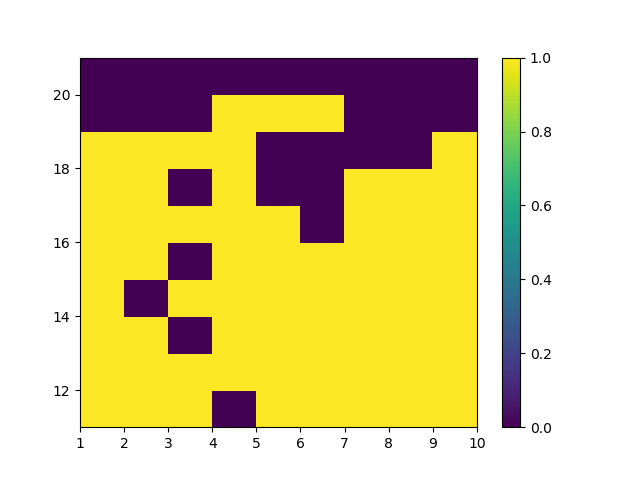
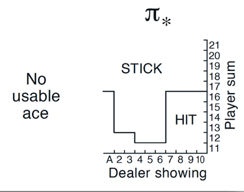
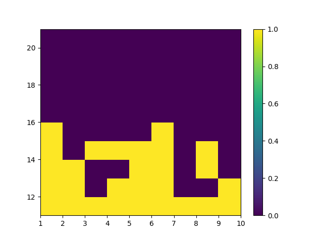
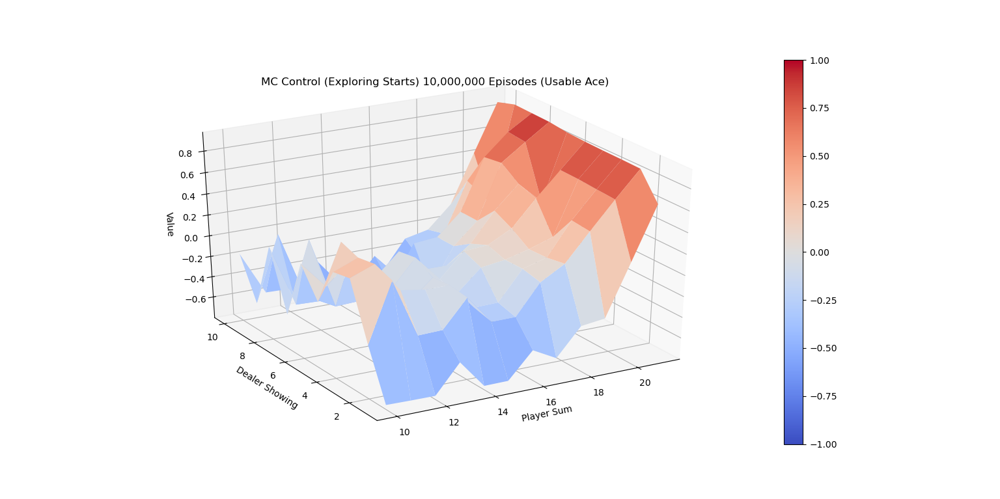
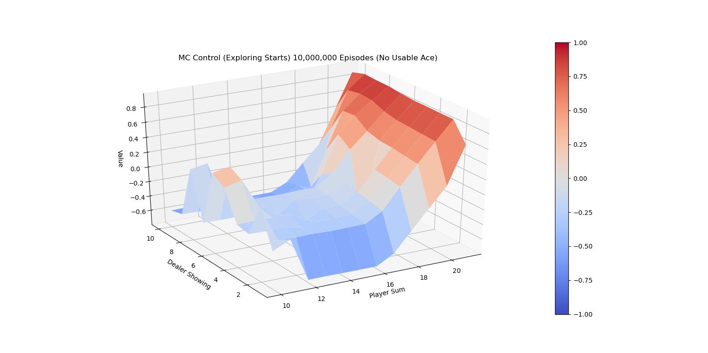

但是此方法有一个前提要满足，由于数据是依据策略 $\pi_{i}$ 生成的，理论上需要保证在无限次的模拟过程中，每个状态都必须被无限次访问到，才能保证最终每个状态的Q估值收敛到真实的 $q_{*}$。满足这个前提的一个简单实现是强制随机环境初始状态，保证每个状态都能有一定概率被生成。这个思路就是 Monte Carlo Control with Exploring Starts算法，伪代码如下：
$$
\begin{align*}
&\textbf{Monte Carlo ES (Exploring Starts), for estimating } \pi \approx \pi_{*} \\
& \text{Initialize:} \\
& \quad \pi(s) \in \mathcal A(s) \text{ arbitrarily for all }s \in \mathcal{S} \\
& \quad Q(s, a) \in \mathbb R \text{, arbitrarily, for all }s \in \mathcal{S}, a \in \mathcal A(s) \\
& \quad Returns(s, a) \leftarrow \text{ an empty list, for all }s \in \mathcal{S}, a \in \mathcal A(s)\\
& \\
& \text{Loop forever (for episode):}\\
& \quad \text{Choose } S_0\in \mathcal{S}, A_0 \in \mathcal A(S_0) \text{ randomly such that all pairs have probability > 0} \\
& \quad \text{Generate an episode from } S_0, A_0 \text{, following } \pi : S_0, A_0, R_1, S_1, A_1, R_2, ..., S_{T-1}, A_{T-1}, R_T\\
& \quad G \leftarrow 0\\
& \quad \text{Loop for each step of episode, } t = T-1, T-2, ..., 0:\\
& \quad \quad \quad G \leftarrow \gamma G + R_{t+1}\\
& \quad \quad \quad \text{Unless the pair } S_t, A_t \text{ appears in } S_0, A_0, S_1, A_1, ..., S_{t-1}, A_{t-1}\\
& \quad \quad \quad \quad \text{Append } G \text { to }Returns(S_t, A_t) \\
& \quad \quad \quad \quad Q(S_t, A_t) \leftarrow \operatorname{average}(Returns(S_t, A_t))\\
& \quad \quad \quad \quad \pi(S_t) \leftarrow \operatorname{argmax}_a Q(S_t, a)\\
\end{align*}
$$
下面我们实现21点游戏的Monte Carlo ES 算法。21点游戏只有200个有效的状态，可以满足算法要求的生成episode前先随机选择某一状态的前提条件。
G = 0 for t inrange(len(episode_history) - 1, -1, -1): s, a, r = episode_history[t] G = discount_factor * G + r ifnotany(s_a_r[0] == s and s_a_r[1] == a for s_a_r in episode_history[0: t]): returns_sum[s, a] += G returns_count[s, a] += 1.0 Q[s][a] = returns_sum[s, a] / returns_count[s, a] best_a = np.argmax(Q[s]) policy[s][best_a] = 1.0 policy[s][1-best_a] = 0.0
Monte Carlo方法策略提示的收敛是比较慢的，下图是运行10,000,000次episode后有Usable Ace时的策略 $\pi_{*}^{\prime}$。对比理论最优策略，MC ES在不少的状态下还未收敛到理论最优解。

MC ES 10M的最佳策略（有Ace）
同样的，下两张图是无Usable Ace情况下的理论最优策略和试验结果的对比。

理论最佳策略（无Ace）

MC ES 10M的最佳策略（无Ace）
下面的两张图画出了运行代码10,000,000次episode后 $\pi{*}$的V值图。

MC ES 10M的最佳V值（有Ace）

MC ES 10M的最佳V值（无Ace）
Exploring Starts 蒙特卡洛控制改进
为了避免Monte Carlo ES Control在初始时必须访问到任意状态的限制，教材中介绍了一种改进算法，On-policy first-visit MC control for $\epsilon \text{-soft policies}$ ，它同样基于Monte Carlo 预估Q值，但用 $\epsilon \text{-soft}$ 策略来代替最有可能的action策略作为下一次迭代策略，$\epsilon \text{-soft}$ 本质上来说就是对于任意动作都保留 $\epsilon$ 小概率的访问可能，权衡了exploration和exploitation，由于每个动作都可能被无限次访问到，Explorting Starts中的强制随机初始状态就可以去除了。Monte Carlo ES Control 和 On-policy first-visit MC control for $\epsilon \text{-soft policies}$ 都属于on-policy算法，其区别于off-policy的本质在于预估 $q_{\pi}(s,a)$时是否从同策略$\pi$生成的数据来计算。一个比较subtle的例子是著名的Q-Learning，因为根据这个定义，Q-Learning属于off-policy。
$$
\begin{align*}
&\textbf{On-policy first-visit MC control (for }\epsilon \textbf{-soft policies), estimating } \pi \approx \pi_{*} \\
& \text{Algorithm parameter: small } \epsilon > 0 \\
& \text{Initialize:} \\
& \quad \pi \leftarrow \text{ an arbitrary } \epsilon \text{-soft policy} \\
& \quad Q(s, a) \in \mathbb R \text{, arbitrarily, for all }s \in \mathcal{S}, a \in \mathcal A(s) \\
& \quad Returns(s, a) \leftarrow \text{ an empty list, for all }s \in \mathcal{S}, a \in \mathcal A(s)\\
& \\
& \text{Repeat forever (for episode):}\\
& \quad \text{Generate an episode following } \pi : S_0, A_0, R_1, S_1, A_1, R_2, ..., S_{T-1}, A_{T-1}, R_T\\
& \quad G \leftarrow 0\\
& \quad \text{Loop for each step of episode, } t = T-1, T-2, ..., 0:\\
& \quad \quad \quad G \leftarrow \gamma G + R_{t+1}\\
& \quad \quad \quad \text{Unless the pair } S_t, A_t \text{ appears in } S_0, A_0, S_1, A_1, ..., S_{t-1}, A_{t-1}\\
& \quad \quad \quad \quad \text{Append } G \text { to }Returns(S_t, A_t) \\
& \quad \quad \quad \quad Q(S_t, A_t) \leftarrow \operatorname{average}(Returns(S_t, A_t))\\
& \quad \quad \quad \quad A^{*} \leftarrow \operatorname{argmax}_a Q(S_t, a)\\
& \quad \quad \quad \quad \text{For all } a \in \mathcal A(S_t):\\
& \quad \quad \quad \quad \quad \pi(a|S_t) \leftarrow
\begin{cases}
1 - \epsilon + \epsilon / |\mathcal A(S_t)| & \text{ if } a = A^{*}\\
\epsilon / |\mathcal A(S_t)| & \text{ if } a \neq A^{*}\\
\end{cases} \\
\end{align*}
$$
for episode_i inrange(1, num_episodes + 1): episode_history = gen_stochastic_episode(policy, env)
G = 0 for t inrange(len(episode_history) - 1, -1, -1): s, a, r = episode_history[t] G = discount_factor * G + r ifnotany(s_a_r[0] == s and s_a_r[1] == a for s_a_r in episode_history[0: t]): returns_sum[s, a] += G returns_count[s, a] += 1.0 Q[s][a] = returns_sum[s, a] / returns_count[s, a] update_epsilon_greedy_policy(policy, Q, s)
评论
shortnamefor Disqus. Please set it in_config.yml.